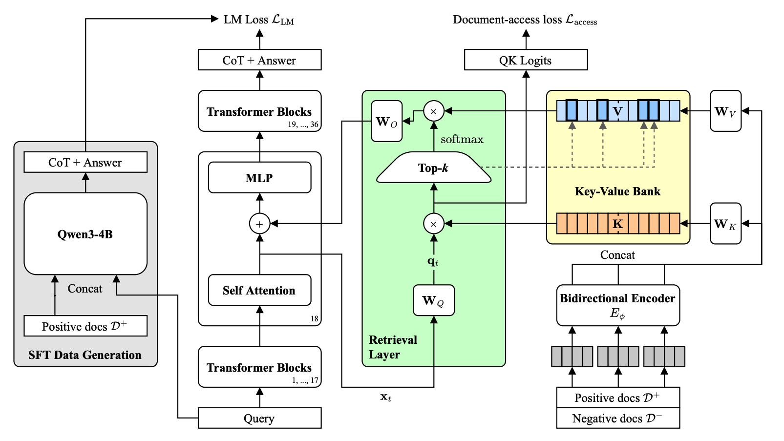
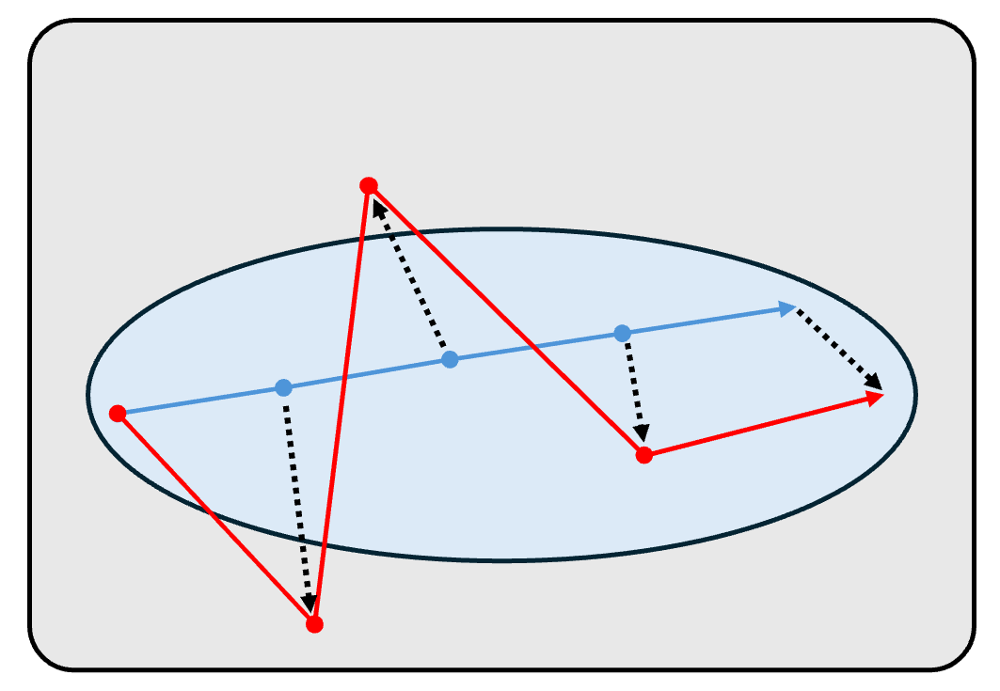
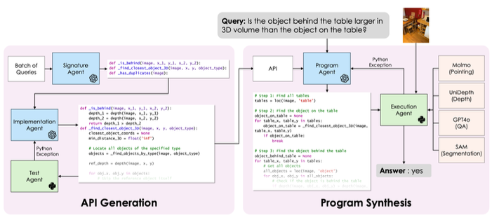
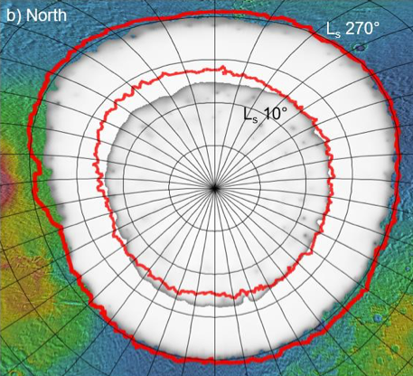
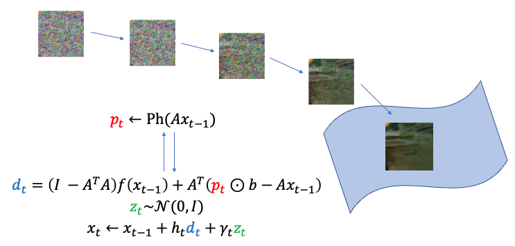

Retrieval Layers: Fast End-to-End Retrieval with Sparse Attention
In Submission
I am a Computer Science PhD student at Columbia co-advised by Micah Goldblum and Pavel Izmailov. I am also a visiting researcher at NYU CILVR. My doctoral work is supported by the NSF Graduate Research Fellowship.
Previously, I completed my B.S. in Applied and Computational Mathematics from Caltech where I worked with Georgia Gkioxari on visual reasoning and in Katie Bouman’s lab on imaging inverse problems. I have also interned at Apple training large video models, and at the NASA Jet Propulsion Laboratory calibrating GPR models.
I am interested in developing methods to push the temporal horizons of machine learning models. Recently, I have approached this with world model planning for efficient future horizons, and sparse attention retrieval for longer past horizons. I believe that improving both these directions of horizons will allow agents to be truly persistent and capable.

In Submission

NeurIPS World Models in Physical AI Workshop 2026


Planetary Science Journal 2025
